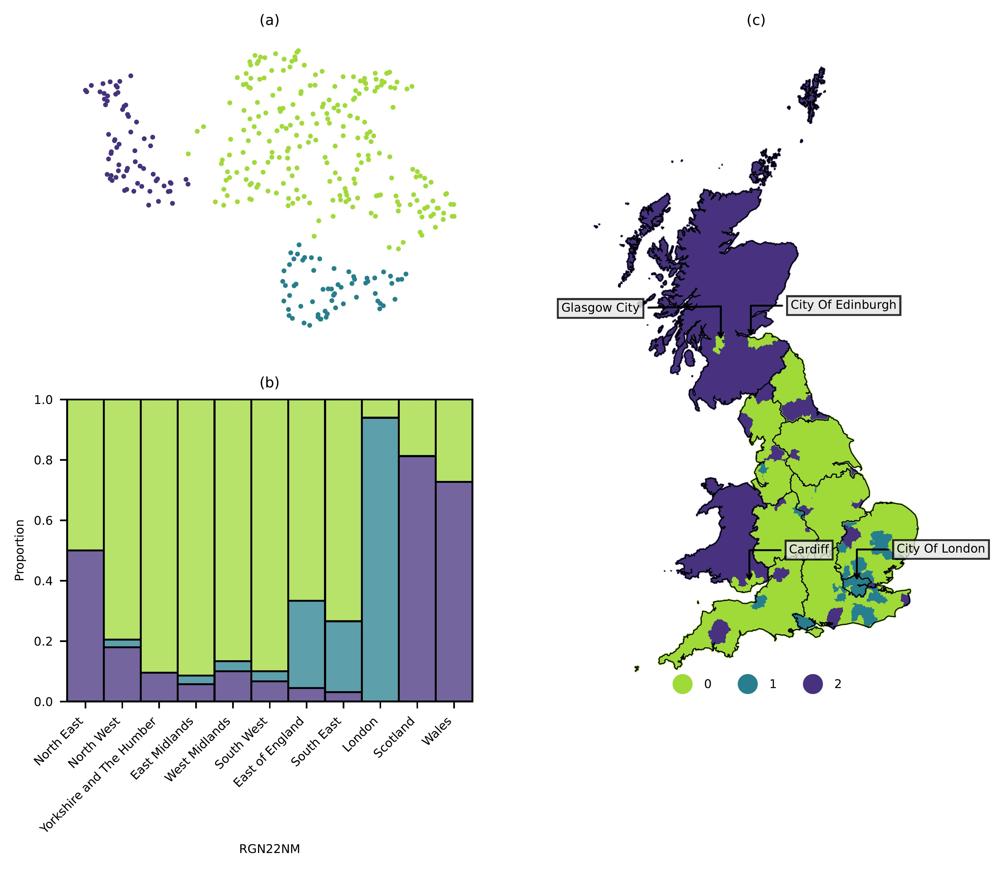
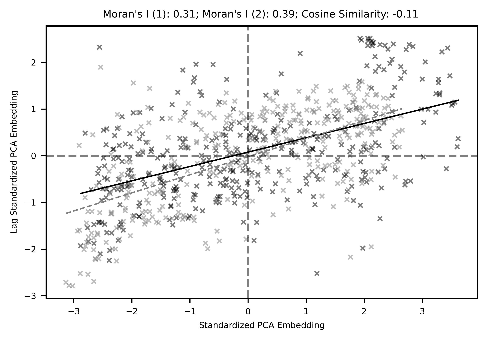
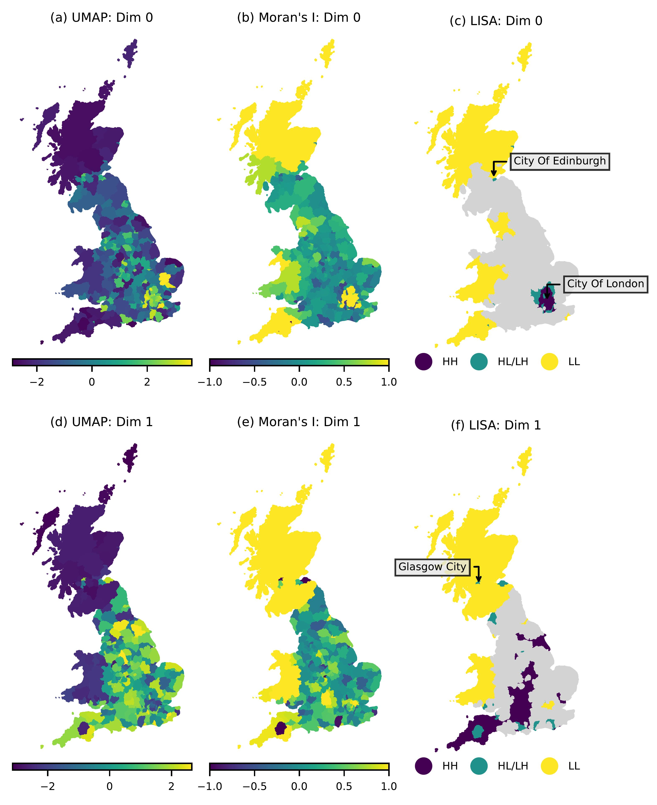
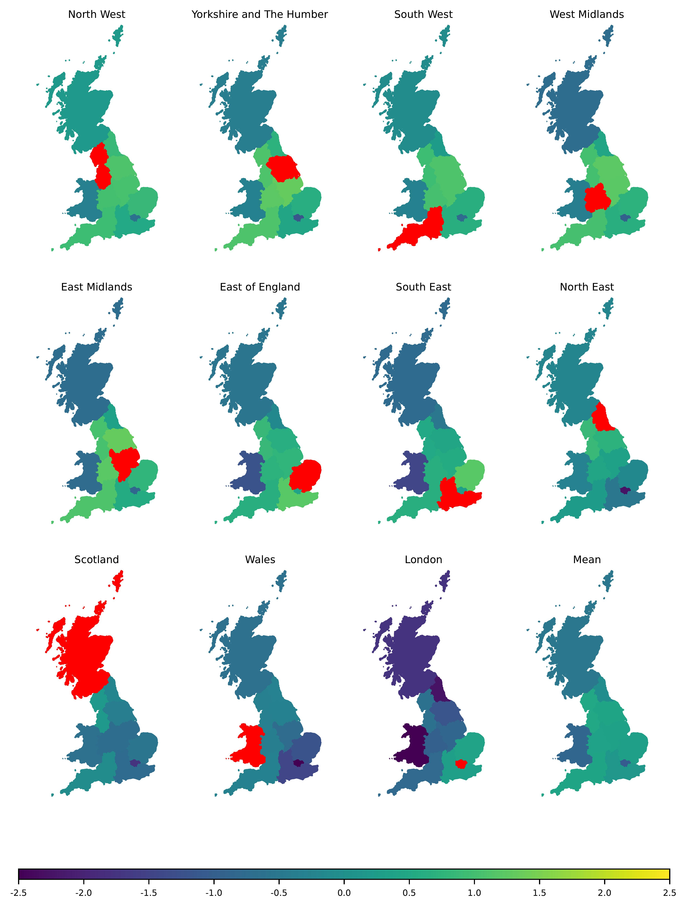
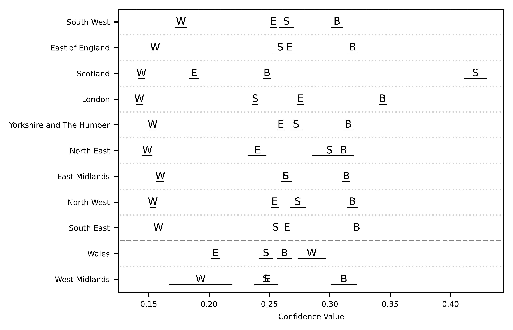

![]()

Mapping Great Britain’s Semantic Footprints through a Large Language Model Analysis of Reddit Comments
open-access
github
preprint
Abstract
Observed regional variation in geotagged social media text is often attributed to dialects, where features in language are assumed to exhibit region-specific properties. While dialects are seen as a key component in defining the identity of regions, there are a multitude of other geographic properties that may be captured within natural language text. In our work, we consider locational mentions that are directly embedded within comments on the social media website Reddit, providing a range of associated semantic information, and enabling deeper representations between locations to be captured. Using a large corpus of geoparsed Reddit comments from UK-related local discussion subreddits, we first extract embedded semantic information using a large language model, aggregated into local authority districts, representing the semantic footprint of these regions. These footprints broadly exhibit spatial autocorrelation, with clusters that conform with the national borders of Wales and Scotland. London, Wales, and Scotland also demonstrate notably different semantic footprints compared with the rest of Great Britain.
Keywords
vernacular geography, semantics, social media, natural language processing
Introduction
The prevalence of social media data for use in geographic research has generated a renewed interest in the concept of ‘place’ (Wagner, Zipf, and Westerholt 2020; Purves, Winter, and Kuhn 2019; Westerholt, Mocnik, and Zipf 2018), as contributions to social media are theorised to capture informal knowledge that represents a place-based understanding of geography (Goodchild and Li 2011; Sui and Goodchild 2011). In the context of language, this place-based knowledge is generated through ‘vernacular geography’, which describes the natural language used when informally describing geographic locations (Gao et al. 2017; Goodchild and Li 2011; Waters and Evans 2003; Hollenstein 2008). This informal knowledge incorporates biases regarding locations, better representing human perceptions of geography, compared with formal administrative definitions. In this sense, associations of geography drawn from social media capture place through a ‘bottom-up’ approach, building knowledge through experience rather than administrative formalisations (Agnew 2005; Sui and Goodchild 2011). While many works have considered the formalisation of place through geotagged social media data, few have considered how the semantic properties of text may reveal geographic heterogeneity between regions, generated directly through vernacular geography. The components of vernacular geography are closely coupled with the identity of regions, where culture, topics, and general perceptions are captured through the language associated with locational mentions in text (Paasi 2003; Buttimer 2015).
A multitude of works have considered the geographic variation in geotagged social media text (Russ 2012; Doyle 2014; Huang et al. 2016; Gonçalves and Sánchez 2014; Pérez et al. 2019; Arthur and Williams 2019; Eisenstein et al. 2014), focussing primarily on how dialect variation is captured through differences in the vocabulary (lexicons) of contributors over geographic space. For example; Tweet lexicons originating in the North East of England are noticeably different compared with the South (Arthur and Williams 2019). While dialects do demonstrate geographic heterogeneity, they only present one component of language that may exhibit geographic variation and do not directly contribute properties associated with vernacular geography. This limitation stems primarily from the reliance of these works on geotagged social media, where the textual content rarely relates to the geotagged location (Kropczynski et al. 2018), meaning dialects are the only explainable trait that results in geographic heterogeneity.
In our work, we instead consider the ability to compare the geographic variation in semantic information relating to locational mentions embedded directly within social media text. This approach means that instead of solely focussing on dialects, our semantic differences capture a broad range of associations between locations, contributed by the vernacular geography of users. While a lexical approach explores the vocabulary of a language, we instead generate sentence embeddings using new developments in natural language processing, which enable nuanced semantic information to be numerically represented (Devlin et al. 2019). Unlike simple lexical representations, sentence embeddings capture contextual semantic information (Hu et al. 2020). While general topics of discussion are shared between locations, semantic representations are capable of capturing the differing context in which they are mentioned. For example, ‘restaurants’ are frequently discussed in location forums, but the way they are discussed is influenced by the distinctive culture of each location.
We name these representations the ‘semantic footprints’ of locations; capturing semantic traces relating to locations, contributed by individuals through a subset of their digital footprints (Walden-Schreiner, Leung, and Tateosian 2018). We then analyse these semantic footprints, to determine whether they exhibit spatial autocorrelation or geographically cohesive clustering. To generate an explainable characteristic of these footprints, we then explore whether generated national identities of location-associated text correlates with regions where footprints appear more semantically isolated. To achieve this, we utilise the emergent properties of large language models (LLMs), where a task known as zero-shot classification enables models to assign labels to text, without any annotated training data. We query an LLM to attribute a specific sub-nationality within the United Kingdom to each of our comments and explore whether the varying strength of these nationalities correlate with differences in our semantic footprints.
Section 2 first gives an overview of work exploring semantic variation in social media text, regional identities, and how our approach differs to related work. Section 3 describes our data, then outlines the processing used to generate semantic footprints and describes our geographic analysis of these footprints. Section 4 presents our results and Section 5 concludes with suggestions for future work.
Geographic Variation in Social Media Text
While formal geographic regions within Great Britain are typically designed for administrative and political purposes, they are non-restrictive in how populations can move between them. The level of geographic cohesion between regions across Great Britain is often studied from the context of mobility, where data sources like Census or transport records describe the physical movement of populations and individuals across geographic space (Rae 2009; Titheridge et al. 2009), or through non-physical networks using phone records (Sobolevsky et al. 2013; Reades, Calabrese, and Ratti 2009; Y. Zheng 2015; Lambiotte et al. 2008), and social media (Lengyel et al. 2015; Arthur and Williams 2019; Sui and Goodchild 2011). When these networks are examined, cohesive clusters develop, which broadly appear to correlate with administrative boundaries (Arthur and Williams 2019; Ratti et al. 2010).
Alternatively, many works have taken advantage of the abundance of geotagged social media text, to examine regional differences in dialects (Huang et al. 2016; Eisenstein et al. 2014; Gonçalves and Sánchez 2014; Arthur and Williams 2019; Russ 2012; B. Han, Cook, and Baldwin 2012; Doyle 2014; X. Zheng, Han, and Sun 2018). Many of these works have noted that, like online or physical networks, geographically cohesive properties emerge, which appear to correlate with administrative boundaries (Huang et al. 2016; Eisenstein et al. 2014; Gonçalves and Sánchez 2014; Arthur and Williams 2019). These results conform with the idea that dialects are an important component in the identity of regions (Haesly 2005; Llamas and Watt 2014; Llamas 2009). Despite this, dialects only present a single component of language that contributes to a sense of geographic identity between regions (Middleton and Freestone 2008; Haesly 2005), ignoring the wealth of vernacular geography that may also be captured in text (Evans and Waters 2007; Sui and Goodchild 2011; Berragan et al. 2023).
Studies that consider dialect variation in social media text only consider geotags to be a geographically relatable feature of this data source. Given social media communication comprises a broad range of topics that do not necessarily relate to locational discussion, these geotags and associated text are unlikely to be directly related. Any observed regional variation is therefore only attributable to the dialect of the contributing author, with the assumption that the author is a resident in the geotagged location. In contrast to this approach, locational mentions embedded directly within text present an alternative method to explore how the language regarding locations varies geographically. Place names embedded within text directly can also be related with the surrounding context of their use, capturing the vernacular geography of contributing users (Sui and Goodchild 2011; Evans and Waters 2007). Lexicons associated with locations identified in this manner therefore incorporate a broad range of topics, associations, and cultural information, rather than solely dialects, more broadly capturing the components of language that contribute to the identity of locations (Haesly 2005). In our work, we therefore extract place names from a collection of UK specific comments taken from the social media website Reddit, attributing coordinate information through a process called geoparsing (Purves, Winter, and Kuhn 2019), allowing for us to explore the geographic heterogeneity of text associated with identified locations.
While past works have primarily considered the statistical comparison between location-based lexicons, where word counts are associated with aggregate regions generated through geotagged Tweets, this approach is limited when considering the more nuanced semantic variations in vernacular geography. Recent progress in natural language processing have led to the development of large language models (LLMs) which are able to capture deep contextual semantic information from text, through sentence and word embeddings (Devlin et al. 2019). Unlike a lexical approach, where word order and semantic information is not captured, these embeddings act as numerical representations of text which incorporate contextual semantic information in depth. Embeddings that are more semantically similar are closer together in their embedding space, meaning, like lexicons, these embeddings may be statistically compared. We therefore generate sentence embeddings for each comment in our corpus that contains a place name, which are then aggregated by location, forming what we call a semantic footprint. These footprints represent the collective geographic knowledge of each individual user in our corpus, built through their vernacular geography, capturing informal, place-based information through their perception of geoparsed locations (Sui and Goodchild 2011; Goodchild and Li 2011).
In this work, we generate a new comparative measure between regions in the UK through an examination of text associated with locations, extracted from comments on the social media website Reddit. While past work has examined variation between regions from the perspective of social media networks, or by examining lexicons associated with geotagged social media messages, we examine regional variations derived from geoparsed embeddings generated from a large language model. Unlike using geotags, which ascribe linguistic features such as dialect to specific locations, our method instead captures any comment that mentions a location alongside its semantic context. Quantified information therefore does not reflect dialects associated with locations, but common semantic associations, embedding cultural information, or location-specific topics and opinions. Given users mentioning locations are not necessarily residents, these semantic associations represent a collective informal geographic knowledge generated through the vernacular geography of people across the UK, embedding their general semantic footprint.
Methodology
The following section first introduces our main data source; the social media website Reddit, from which we access a collection of user-submitted comments. Following this, we detail our methodology for generating semantic footprints from each of these comments, and how we analyse the geographic properties of these footprints.
Data
Reddit is a public discussion, news aggregation social network, and among the top 20 most visited websites in the United Kingdom. In 2020, Reddit had around 430 million active monthly users, comparable to the number of Twitter1 users (Murphy 2019; Statista 2022). Reddit is divided into separate independent subreddits each with specific topics of discussion, where users may submit posts which each have dedicated nested conversation threads that users can add comments to. Subreddits cover a wide range of topics, and in the interest of geography, they also act as forums for the discussion of local places. The United Kingdom subreddit acts as a general hub for related topics, notably including a list of smaller and more specific related subreddits. This list provides a ‘Places’ section, a collection of local British subreddits, ranging in scale from country (/r/England), region (/r/thenorth, /r/Teeside), to cities (/r/Manchester) and small towns (/r/Alnwick). In total there are 213 subreddits that relate to ‘places’ within the United Kingdom2. We use the corpus generated by anonymised, which consists of a collection of all Reddit comments taken from each UK related subreddit (Baumgartner et al. 2020), with place names identified by a custom transformer-based named entity recognition model3. In total 8,282,331 comments were extracted, submitted by 490,535 unique users, between 2011-01-01 and 2022-04-17. Table \(\ref{tbl-example}\) gives an example entry from this geoparsed Reddit corpus.
There are a total of 40,429 unique locations in this corpus, with a highly skewed distribution in mentions. Many locations were only mentioned a single time (37%), while ‘London’ was mentioned in 283,521 comments. To reduce this skew, we sampled any location mentioned more than 5,000 times, retaining only up to 5,000 randomly sampled comments per location. The goal with this processing was to ensure that our generated embeddings did not simply become biased towards the word embedding for a single location, and instead capture a broader sense of an aggregate region. In our data subset, we find that 1% of users (1,734) mention 29% of our place names. This subset leaves a total of 852,461 comments containing place names. Comments range from 1 to 3,555 words in length, with a mean length of 79. Table \(\ref{tbl-sum}\) gives an overview of the number of comments, word count and number of places that were identified within each administrative region of the UK.
Generating and Analysing Geographic Footprints
Statistical comparisons between two or more distinct texts first relies on an appropriate method for processing the text into a numerical format. Typically, a Term Frequency-Inverse Document Frequency (TF-IDF) approach is used to generate document embeddings (Daniel and James H 2007), which assigns word importance based on the frequency of mentions within a corpus. TF-IDF however does not have the capability to capture broader semantic information, given that there is no knowledge of the meaning behind words. Large Language Models (LLMs) instead are pre-trained on a very large corpus of natural language text, which, alongside their architecture, enables them to more appropriately consider semantic information (Devlin et al. 2019). As with TF-IDF, text is input into these models and output as a numerical representation, which embeds words as high dimensional vectors, capturing contextual semantic information.
This approach differs from past work that only considered a lexical analysis, where semantic information and context is not preserved, instead building vectors that act as semantic representations of locations identified in our corpus, which we name ‘semantic footprints’. Given semantic information is preserved, locational embeddings are able to reflect the deeper associations between geographic locations, built from a multitude of contexts and perspectives, forming an aggregate representation. Any geographically cohesive relationships between footprints therefore demonstrate a direct association between geography and language, which hasn’t been captured previously.
Once we generate these footprints we first explore how they produce emerging spatial structures from the bottom-up, generating clusters of small-scale geographic units to capture larger scale aggregations based on semantic information. In this analysis we find that our generated spatial structures broadly conform with larger scale administrative aggregations. We therefore then consider a top-down approach, using these larger administrative regions to generate a comparative analysis of aggregate footprints. To derive explainable characteristics of observed differences between these regions, we observe how national identities can be captured through text, and how these identities vary geographically.
Creating Embeddings
We first create semantic embeddings for each comment in which a location was mentioned, using the sentence-transformers Python library (Reimers and Gurevych 2019), with the all-mpnet-base-v2 model4. With our selected embedding model, we then performed the following steps to generate embeddings for each Local Authority District (LAD) in Great Britain.
- Masked any place name with a generic token: ‘PLACE’ (using place name text spans included in the corpus).
- Generate sentence embeddings for each comment.
- Group embeddings by LAD using identified locations, taking the mean embedding.
To visualise the outputs from this processing we consider an example comment \(s_1 = \text{"I live in London."}\), shown on Equation \(\ref{eq-dims}\).
\[ \begin{aligned} \mathit{s_{i}} &= \text{'I live in \textit{London}'} \\ \textbf{1. }\downarrow \\ \mathit{s_{i}} &= \text{'I live in \texttt{PLACE}'}, \end{aligned} \qquad \begin{aligned} \textbf{2. }\mathit{s_{i}} \rightarrow \begin{bmatrix} x_{1} \\ x_{2} \\ \vdots\\ x_{n} \end{bmatrix}, \end{aligned} \qquad \begin{aligned} \textbf{3. }\mathit{LAD_{j}} = \begin{bmatrix} x_{1,1} & x_{1,2} & \cdots & x_{1,t} \\ x_{2,1} & x_{2,2} & \cdots & x_{2,t} \\ \vdots & \vdots & \ddots & \vdots \\ x_{n,1} & x_{n,2} & \cdots & x_{n,t} \end{bmatrix} \rightarrow \begin{bmatrix} \bar{x_{1}} \\ \bar{x_{2}} \\ \vdots \\ \bar{x_{n}} \end{bmatrix} \end{aligned} \tag{1}\]
In Equation \(\ref{eq-dims}\), \(n\) is the sentence-transformers embedding dimension (768), and \(t\) is the total number of unique comments that relate to locations within a single LAD region (\(LAD_j\)). Values (\(x_i\)) in step 2. are model weights that represent the embedding for the comment \(s_i\), capturing semantic information. This process is also visually demonstrated on Figure 1.
Given each \(LAD\) has a variable number of comments associated with them, we must process associated embeddings into a ‘semantic footprint’ representation of a fixed size, so that they may be directly compared. To achieve this, all embeddings associated with comments relating to locations within a \(LAD_j\) are processed into a one-dimension vector of size \(1x768\). The most common approach for this dimensionality reduction uses ‘mean-pooling’; taking the mean across all embeddings, which is common in tasks like topic analysis (Reimers and Gurevych 2019).
By masking place names, we ensure that no comment embeddings accidentally incorporate geographically grounded information. For example, comments in South Eastern local authorities are likely to frequently mention London, given they are geographically proximal. Embeddings for these locations would therefore capture an association through the mention of London, rather than general semantic information. For our work, we want to exclude any geographic information, ensuring that embeddings solely capture semantic associations.
Given that transformers are a relatively new architecture in natural language processing, and the creation of these models require significant computational resources and training time, their use to date has been limited in related research. Our choice to use the transformer architecture stems from the emphasis we place on the extraction of nuanced and contextual semantic information, which is lost with lexical count-based methods like TF-IDF. It should be noted however that while TF-IDF methods are less complex, they are typically more interpretable; for instance, words that contribute importance to an embedding may be extracted from a TF-IDF model. The numerical representations of any text generated by transformers are not directly interpretable in this manner. The following section therefore analyses our semantic footprints with respect to their numerical representations, rather than through their lexicons.
Spatial Clustering and Autocorrelation
It is reasonable to assume that there are LADs within our corpora that generate embeddings that capture similar semantic properties. A typical method to group unlabelled multi-variate data based on shared properties uses unsupervised clustering (Sinaga and Yang 2020; Likas, Vlassis, and J. Verbeek 2003). Therefore, to explore whether geographically cohesive clusters appear within our semantic embeddings, we generate hierarchical clusters, which are non-geographically bounded, using agglomerative clustering. This clustering method allows for the optimal number of clusters to be determined automatically, which was determined to be 3. These clusters were visualised geographically, to examine whether geographically cohesive groupings occurred. The proportion of clusters present within each administrative region (RGN)5 in Great Britain was also plotted to determine whether clusters appeared to correlate with administrative boundaries.
To quantify the level of spatial autocorrelation that our embeddings exhibit, we consider the Moran’s I metric, which identifies the spatial relationship between each observation and its geographic neighbours (Anselin 1995; Rey, Arribas-Bel, and Wolf 2023). Moran’s I values are generated based on the strength of correlation between values and the aggregate values of their geographic neighbours, known as their spatial lag. Higher Moran’s I values therefore denote a stronger spatial autocorrelation. Given that Moran’s I analysis requires univariate data, we explore global spatial autocorrelation of our semantic footprints UMAP decomposed into two dimensions, and plot both dimensions against their spatial lag, giving two distinct global Moran’s I values.
We then consider how localised levels of high spatial autocorrelation may be identified through a Local Indicators of Spatial Autocorrelation (LISA) analysis. Instead of single global values, LISA analysis determines whether each unique LAD polygon exhibits a significant level of spatial autocorrelation, and assigns a local Moran’s I value for each.
It is important to note that the magnitude of our embeddings do not convey any definable information, values therefore only highlight differences in semantic information between regions, rather than importance. For example, an embedding value of 0 is not less important than a value of 1 or -1.
Semantic Similarity
Following our analysis of LAD semantic footprints, we explore our semantic footprints from a top-down perspective, aggregating LADs into established large-scale RGNs across Great Britain, taking the mean of the collective semantic footprints. Each RGN is therefore represented by a single 768 dimension semantic footprint embedding. We then calculate the cosine similarity between each RGN embedding, demonstrating the level of inter-region semantic cohesion across Great Britain.
Cosine similarity is a common metric for comparing embeddings, as it is invariant to the magnitude of the vectors, and only considers the direction. This is important as the magnitude of embeddings is not meaningful, and only the direction of the vector conveys information. For example, the embedding for the ‘South East’ cannot be twice as important as the embedding for the ‘North West’.
Capturing National Identities through Text
To generate explainable characteristics of any geographically distinct semantic footprints generated in our analysis, we consider how a language model associates national identities with the semantic properties of text. In our approach we mirror qualitative data collection methodologies in political science research, where individuals are typically queried as to their chosen national identity (Haesly 2005; Griffiths 2022), instead generating the categorisations of comments by querying a large language model (LLM).
LLMs are pre-trained on a large corpus of natural language text, building representations of this text that emulate a human understanding of language. The underlying theory is that these representations capture the collective knowledge of humans that contributed the natural language text used to build them. Therefore, in addition to factual information, when posed with non-deterministic questioning, these models are able to contribute the biased information that is incorporated into their model weights.
Recent research has noted on the ability to perform zero-shot classification using LLMs, where class predictions may be made without the model ever having previously seen the labels (Wei, Bosma, et al. 2022; Wei, Tay, et al. 2022). While research has considered the use of questionnaires to query the strength of national identities within the UK (Haesly 2005; Griffiths 2022), an LLM may instead be used. For example, an LLM may be questioned whether it personally feels a sequence of text appears to be ‘British’, ‘English’, ‘Scottish’, or ‘Welsh’. Through this zero-shot classification, we are able to determine the strength of national identity associated with each region in our work, to examine whether this appears to correlate with any cohesion between the semantic footprints that we generate. Importantly, we are also able to generate confidence values from the chosen LLM, allowing for the strength of these national identities to be captured.
Semantic information within our comments is expected to capture both explicit information contributed by users; for example stating ‘London is a British city’, in addition to implicit semantic information that exists within language. For example the phrase ‘bonnie Scotland’ may suggest a strong identity due to the inclusion of Scottish slang6. Unlike our semantic footprints, we do not mask place name mentions in these embeddings, enabling the model to make its own decisions regarding place name mentions.
To identify regional identities through semantic information, we build on the emergent properties of large language models, which enable a task known as ‘Zero-Shot Classification’. This allows models to predict a class that was not seen during training, by generating a prompt that contains the labels required. For this task we select the typeform/distilbert-base-uncased-mnli model7, which is tailored towards zero-shot classification, therefore generating slightly different embeddings compared with those used for our semantic footprints. For our task the following gives an example prompt with a portion of a comment taken from our corpus, where the Scottish colloquial slang ‘gonnae’ is used:
Classify the following input text into one of the following four categories:
[British, English, Scottish, Welsh]
Input Text: My favourite was in Livingston: 'Rab, I'm gonnae find you.'The output would then be given as a sequence of confidence values for each label:
'labels': ['Scottish', 'British', 'Welsh', 'English']
'scores': [0.761, 0.144, 0.052, 0.043]Results
Figure 2 (a) shows clusters of LAD transformer embeddings UMAP decomposed into two dimensions, indicating embeddings that share similar semantic properties. These clusters appear to broadly correlate with three distinct regions within Great Britain, where cluster 0 most closely identifies with England, 1 with London and surrounding areas, and 2 with Scotland and Wales (Figure 2 (b-c)). The few areas that appear as cluster 0 in Wales and Scotland are major urban centres like Cardiff, Glasgow, and Edinburgh. Overall these clusters appear to be geographically restricted, and even broadly conform with administrative regions like the Welsh and Scottish borders.
These findings appear to share similarities with past work that has observed strong ‘boundary effects’, where lexical similarity between geotagged Tweets often correlates with administrative boundaries (Li et al. 2021; Bailey et al. 2018; Arthur and Williams 2019; Yin et al. 2017). Our embeddings also exhibit the general geographically coherent patterns that have been observed in geographical lexical variations in social media (Russ 2012; Doyle 2014; Huang et al. 2016; Gonçalves and Sánchez 2014; Pérez et al. 2019; Arthur and Williams 2019; Eisenstein et al. 2014). Notably, unlike dialects, where a geographic component is expected, the geographic association of our general semantic embeddings has not been demonstrated in past work. Results therefore demonstrate that despite no pre-existing geographic information like geotags or place names, general text associated with locations appears to embed a geographic component. The geographic coherence in our results is particularly strong at the borders of Scotland and Wales, which conforms with our hypothesis that the vernacular geography that exists within social media text embeds components that contribute to the strength of national identities (Haesly 2005).
As noted however, major cities in Wales and Scotland Glasgow, Edinburgh and Cardiff share a cluster with English LADs rather than their respective country, suggesting that these locations are more semantically connected with the rest of Great Britain. This observation mirrors the results of work that considered co-occurring locational mentions between cities, where shared city mentions in text often appear irrespective of distance, and across administrative borders [anonymised]. This deviation from the relative semantic isolation of Scotland and Wales from England appears to be reflective of the nature of major cities, given they tend to share stronger physical geographic connections across a larger geographic scope, and more influential cultural connections compared with rural areas, captured in our work through shared semantic traits.
Cluster 1 presents in areas surrounding London and suggests distinctiveness of this region relative to the rest of Great Britain. This is interesting given London’s extensive connectivity relative to the rest of the country, and the general sense of strong association with other cities, given it is the capital city [anonymised]. Our results therefore suggest that despite London’s importance nationally, semantic information is able to capture a deeper context that dissociates it from other regions. This effect may be due to factors unique to London, for example its prominence globally, influencing both tourism and business external to the United Kingdom, which alter the cultural landscape of the city. The isolated characteristics of London are particularly observable through its economic differences, where high costs of living have generated the need for a ‘London weighting’8 of salaries (Hirsch 2016).
The following section formalises the level of geographic coherence that the embeddings exhibit, and highlights the key locations that drive the relationship between text and geography.
Moran’s I Analysis

To quantify whether our embeddings demonstrate spatial autocorrelation, we consider the Moran’s I metric, which identifies the spatial relationship between each observation and its geographic neighbours (Anselin 1995). Given that this analysis requires univariate data, we explore global spatial autocorrelation of our UMAP decomposed embeddings computing the spatial lag for both dimensions. On Figure 3, we plot both values for each LAD semantic footprint in Great Britain, against the spatial lag of these values. A higher correlation between the semantic footprints values and their spatial lag indicates a stronger level of global spatial autocorrelation, resulting in a higher Moran’s I value. Figure 3 shows a positive correlation between the PCA decomposed embedding values and their spatial lag, resulting in Moran’s I values of 0.31 and 0.39. This indicates a reasonably strong spatial autocorrelation with both embedding dimensions, confirming that semantic footprints are typically more similar between nearby locations. While the Moran’s I values for both dimensions are similar, their cosine similarity is negative (-0.11), meaning these two decomposed dimensions capture distinctly different semantic traits.
While spatially coherent results have been demonstrated from the perspective of dialects on social media (Russ 2012; Doyle 2014; Huang et al. 2016; Gonçalves and Sánchez 2014; Pérez et al. 2019; Arthur and Williams 2019; Eisenstein et al. 2014), we have demonstrated that this phenomenon can also be captured from general semantic information. Notably, while dialects have always been considered to have strong geographical grounding (Trudgill 2004), it is more surprising that general semantic information regarding locations similarly exhibits this relationship.

To explore local indicators of spatial autocorrelation (LISA) we plot each decomposed embedding on Figure 4 (a/d), each local Moran’s I value on (b/e) and all significant (\(p<0.05\)) HH and LL LISA quadrants on (c/f). Note that only selecting significant \(p\) values on Figure 4 (c/f) ensures that no regions are included that have values that could demonstrate autocorrelation even if randomly distributed geographically. From Figure 4 (c/f), we can see that notable large areas with significant levels of spatial correlation include;
- Scotland
- Wales
- London and surrounding LADs
- the South West; towards Cornwall
As demonstrated by the low cosine similarity between our UMAP embeddings, they appear to capture distinctly different semantic information. London for example only appears in dimension 0, while dimension 1 captures broader spatial autocorrelation across Scotland and Wales. In Scotland we can see that from both LISAs, Glasgow and Edinburgh represent areas of HL/LH, where semantic information in these cities is not the same as surrounding LADs, an effect that is also captured in some LADs surrounding London. England overall appears to be a less semantically cohesive country based on this analysis, where most LADs do not contribute significant levels of spatial autocorrelation.
These results again demonstrate geographic cohesion between semantic footprints, which notably appear to correspond with the national boundaries of Wales and Scotland. This mirrors the observations of past work where dialect differences appeared to correlate with administrative boundaries (Li et al. 2021; Bailey et al. 2018; Arthur and Williams 2019; Yin et al. 2017). In addition to Wales and Scotland, we have also identified a notable grouping in the South West, which potentially reflects the Cornish identity (Deacon 2007), as well as a grouping associated with London.
Semantic Similarity and Identity

Given the regions highlighted as having strong spatial autocorrelation in their semantic footprints appear to broadly conform with the administrative regions of Wales, Scotland, and London, we examine these footprints from a top-down analysis using pre-defined larger scale aggregations.
Figure 5 compares the cosine similarity between each RGN embedding, allowing for inter-regional cohesion to be explored. The North West has the overall highest level of cosine similarity, displaying comparatively high similarity with most regions across England, excluding London. London has the lowest overall similarity, only sharing positive cosine similarity values with the South and South East of England. As expected, Scotland and Wales have low overall cosine similarity values, with Wales sharing even lower similarity with respect to London and the South East compared with Scotland. Mean values show clearly that the least cohesive regions appear to be London, Wales, and Scotland, three regions that are also those with the strongest levels of spatial autocorrelation.
Excluding London, the North East is the region in England with the lowest overall cosine similarity with the rest of Great Britain. This is perhaps reflective of distinct differences with this region, for example the distinctly lower gross value added (GVA) compared with other regions (Fenton 2018), or the general sense of strong identity that is often noted by residents (Middleton and Freestone 2008). Alternatively, the North West is home to nationally influential urban conurbations, especially between Manchester and Liverpool (Oguz and Walton 2022), likely generating the highest overall semantic similarity of this region compared with the rest of the UK. Comparatively, the East of England, South East and London are neighbouring regions that share high similarities with each other, but exhibit low similarity with the rest of Great Britain, suggesting there are semantic components that distinguish this region of the country from the rest. There is a slightly higher mean similarity with respect to Scotland compared with Wales, due to higher similarities with regions in England, like the North West and South East. Major urban centres in Scotland are relatively well connected to Great Britain through rail routes, and Edinburgh and Glasgow are historically important UK cities, captured by their distinct difference in embedding values during the spatial autocorrelation analysis. This factor likely increases the cosine similarity of Scotland with regions in England, while Wales in this sense is less directly associated with the rest of the UK.
To determine whether regional identities generated by a large language model aligns with these semantically isolated regions in our analysis, we plot the distribution of regional identities identified through our zero-shot classification on Figure 6.
Across each region, the ‘English’ identity is always lower than ‘British’, suggesting that regions within England are typically more strongly associated with the United Kingdom9 than solely England. Unlike English regions however, comments relating to both Scottish and Welsh locations are more strongly associated with their respective nationalities. However, comments relating to Welsh locations appear on average to have stronger confidence values with respect to the British classification, compared with Scottish locations. Similar observations have been captured from qualitative interviewing, where Welsh residents similarly appear to more strongly associate themselves with the British identity, compared with Scottish residents (Carman, Johns, and Mitchell 2014; Llamas and Watt 2014; Llamas 2009; Haesly 2005). Of the English regions, London has a distinctly higher average confidence value of both British and English identities compared with all other regions. Notably given the semantic footprints for Scotland, Wales, and London also have the lowest overall cosine similarity values, these differences in generated identity compared with other regions are a likely component in their semantic differences.

General Observations
Unlike typical representations of the North-South divide within England (Jewell 1994), semantic differences appear to be influenced primarily by proximity to London. Unlike typical representations of this divide, the South West of England therefore appears to be distinct from the South East, with a stronger association with the North. South Eastern regions however do share lower similarity to the Midlands and North of England, which conforms with a typical view of the English North-South divide.
In a similar sense, Scotland and Wales demonstrate distinctly more cohesive semantic properties compared with England, where groupings of high spatial autocorrelation are constrained to smaller regions, like London. In traditional linguistic research, the spoken dialect across England is known to vary considerably (Chambers and Trudgill 1998; Knowles 1973; Deacon 2007; MacKenzie, Bailey, and Turton 2022), which itself captures the distinct social differences, and the localised identities that exist across geographic space. Instead, the high cohesion within Wales and Scotland appears to capture the sense of national identity that these constituent countries exhibit in our analysis, and is a common qualitative observation in political science research (Haesly 2005; Carman, Johns, and Mitchell 2014).
As demonstrated in past work that has examined both physical and non-physical networks, our observed semantic information similarly appears to correlate with pre-defined administrative boundaries, particularly the national boundaries of Scotland and Wales (Li et al. 2021; Bailey et al. 2018; Arthur and Williams 2019; Yin et al. 2017). The distinct difference in footprints between each constituent country in the UK conforms with the idea that vernacular geography captures a sense of identity, given our zero-shot classification demonstrates distinct nationalities between Scotland and Wales, unlike English regions where the generated national identity is typically considered British rather than English. Notably however, the slightly stronger British identity within Wales has been observed previously through qualitative interviewing (Haesly 2005; Carman, Johns, and Mitchell 2014), suggesting that even the nuanced properties of text appear to correlate with the true perceptions of individuals. It is also worth noting that, given the exclusion of place names in our embeddings, these distinct differences are not simply the result of differences in place names (e.g. place names in Wales are distinct from England), which may have influenced the results of past lexical work.
Despite most locations across Scotland and Wales appearing disconnected with the rest of the UK, major cities like Glasgow and Edinburgh are more semantically similar, a distinction that was also observed when the distance decay of locational co-occurrences in text was examined [anonymised]. This suggests that these cities do appear to be typically more semantically connected with the UK, regardless of geographic distance and borders, while other locations typically share semantic properties within the same nation, captured through stronger spatial autocorrelation.
Internal migration patterns within the UK are primarily influenced by family ties, rather than economic factors, employment, or education (Thomas 2019). The observations made in our work demonstrate that this sense of belonging to regions influences the geographically cohesive nature of our semantic footprints. While populations have the ability to distribute evenly across geographic space, they are often reluctant to move far. Local inhabitants within regions develop an identity associated with their home region, traditionally captured in language through dialect variation, and demonstrated in our work through broader semantic associations, which embed contextual meaning, incorporating the cultural variation of regions.
Conclusion
Our paper demonstrates a new method to compare aggregate semantic information for local authorities and regions within the UK, from Reddit comments that mention geoparsed locations, which we name semantic footprints. When examining the semantic footprints of each LAD in the UK, we find that geographically cohesive clusters appear, with significant levels of spatial autocorrelation. Clusters broadly conform with the national borders of Scotland and Wales, while London also appears to be semantically distinct from the rest of England. Through an examination of generated national identities associated with each region, we find that these distinct geographic groupings are a likely result of associated identities, which are generated through general associations captured through the vernacular geography of all users in our social media corpus.
Geoparsing methods contribute an additional geographic dimension to non-geotagged social media data, allowing for a much larger repository of informal natural language geographic text to be used for research. Future work may consider the use of Reddit comment data to derive notable urban areas of interest (Chen 2019). This area of research in particular would benefit from methodologies focussing on the extraction of fine-grained locations from text, which at present is a challenging task (J. Han et al. 2018).
References
Agnew, John. 2005. “Space: Place in Cloke P and Johnston R Eds Spaces of Geographical Thought.”
Anselin, Luc. 1995. “Local Indicators of Spatial AssociationLISA.” Geographical Analysis 27 (2): 93–115. https://doi.org/10.1111/j.1538-4632.1995.tb00338.x.
Arthur, Rudy, and Hywel T. P. Williams. 2019. “The Human Geography of Twitter: Quantifying Regional Identity and Inter-Region Communication in England and Wales.” Edited by Emilio Ferrara. PLOS ONE 14 (4): e0214466. https://doi.org/10.1371/journal.pone.0214466.
Bailey, Michael, Rachel Cao, Theresa Kuchler, Johannes Stroebel, and Arlene Wong. 2018. “Social Connectedness: Measurement, Determinants, and Effects.” Journal of Economic Perspectives 32 (3): 259–80. https://doi.org/10.1257/jep.32.3.259.
Baumgartner, Jason, Savvas Zannettou, Brian Keegan, Megan Squire, and Jeremy Blackburn. 2020. “The Pushshift Reddit Dataset.” arXiv. https://arxiv.org/abs/2001.08435.
Berragan, Cillian, Alex Singleton, Alessia Calafiore, and Jeremy Morley. 2023. “Transformer Based Named Entity Recognition for Place Name Extraction from Unstructured Text.” International Journal of Geographical Information Science 37 (4): 747–66. https://doi.org/10.1080/13658816.2022.2133125.
Buttimer, Anne. 2015. “Home, Reach, and the Sense of Place.” In The Human Experience of Space and Place, 166–87. Routledge.
Carman, Christopher, Robert Johns, and James Mitchell. 2014. More Scottish Than British: The 2011 Scottish Parliament Election. Springer.
Chambers, J. K., and Peter Trudgill, eds. 1998. “Social Differentiation and Language.” In Dialectology, 2nd ed., 57–69. Cambridge Textbooks in Linguistics. Cambridge: Cambridge University Press. https://doi.org/10.1017/CBO9780511805103.007.
Chen, Meixu. 2019. “Understanding the Dynamics of Urban Areas of Interest Through Volunteered Geographic Information,” 21. https://doi.org/10.1007/s10109-018-0284-3.
Daniel, Jurafsky, and Martin James H. 2007. Speech and Language Processing: An Introduction to Natural Language Processing, Computational Linguistics, and Speech Recognition. prentice hall.
Deacon, Bernard. 2007. “County, Nation, Ethnic Group? The Shaping of the Cornish Identity.” The International Journal of Regional and Local Studies 3 (1): 5–29. https://doi.org/10.1179/jrl.2007.3.1.5.
Devlin, Jacob, Ming-Wei Chang, Kenton Lee, and Kristina Toutanova. 2019. “BERT: Pre-training of Deep Bidirectional Transformers for Language Understanding.” arXiv:1810.04805 [Cs], May. https://arxiv.org/abs/1810.04805.
Doyle, Gabriel. 2014. “Mapping Dialectal Variation by Querying Social Media.” In Proceedings of the 14th Conference of the European Chapter of the Association for Computational Linguistics, 98–106. Gothenburg, Sweden: Association for Computational Linguistics. https://doi.org/10.3115/v1/E14-1011.
Eisenstein, Jacob, Brendan O’Connor, Noah A. Smith, and Eric P. Xing. 2014. “Diffusion of Lexical Change in Social Media.” Edited by Robert C. Berwick. PLoS ONE 9 (11): e113114. https://doi.org/10.1371/journal.pone.0113114.
Evans, A. J., and T. Waters. 2007. “Mapping Vernacular Geography: Web-Based GIS Tools for Capturing ’Fuzzy’ or ’Vague’ Entities.” International Journal of Technology, Policy and Management, July.
Fenton, Trevor. 2018. “Regional Economic Activity by Gross Value Added (Balanced), UK - Office for National Statistics.” https://www.ons.gov.uk/economy/grossvalueaddedgva/bulletins/regionalgrossvalueaddedbalanceduk/1998to2017.
Gao, Song, Krzysztof Janowicz, Daniel R. Montello, Yingjie Hu, Jiue-An Yang, Grant McKenzie, Yiting Ju, Li Gong, Benjamin Adams, and Bo Yan. 2017. “A Data-Synthesis-Driven Method for Detecting and Extracting Vague Cognitive Regions.” International Journal of Geographical Information Science 31 (6): 1245–71. https://doi.org/10.1080/13658816.2016.1273357.
Gonçalves, Bruno, and David Sánchez. 2014. “Crowdsourcing Dialect Characterization Through Twitter.” Edited by Tobias Preis. PLoS ONE 9 (11): e112074. https://doi.org/10.1371/journal.pone.0112074.
Goodchild, Michael F., and Linna Li. 2011. “Formalizing Space and Place.”
Griffiths, James David. 2022. “Scrutinizing Relative Territorial Identity Measures.” Publius: The Journal of Federalism 53 (1): 133–51. https://doi.org/10.1093/publius/pjac011.
Haesly, Richard. 2005. “Identifying Scotland and Wales: Types of Scottish and Welsh National Identities.” Nations and Nationalism 11 (2): 243–63. https://doi.org/10.1111/j.1354-5078.2005.00202.x.
Han, Bo, Paul Cook, and Timothy Baldwin. 2012. “Geolocation Prediction in Social Media Data by Finding Location Indicative Words,” 18.
Han, Jialong, Aixin Sun, Gao Cong, Wayne Xin Zhao, Zongcheng Ji, and Minh C. Phan. 2018. “Linking Fine-Grained Locations in User Comments.” IEEE Transactions on Knowledge and Data Engineering 30 (1): 59–72. https://doi.org/10.1109/TKDE.2017.2758780.
Hirsch, Donald. 2016. “London Weighting and London Costs-a Fresh Approach?”
Hollenstein, Livia. 2008. “Capturing Vernacular Geography from Georeferenced Tags.”
Hu, Sheng, Zhanjun He, Liang Wu, Li Yin, Yongyang Xu, and Haifu Cui. 2020. “A Framework for Extracting Urban Functional Regions Based on Multiprototype Word Embeddings Using Points-of-Interest Data.” Computers, Environment and Urban Systems 80 (March): 101442. https://doi.org/10.1016/j.compenvurbsys.2019.101442.
Huang, Yuan, Diansheng Guo, Alice Kasakoff, and Jack Grieve. 2016. “Understanding U.S. Regional Linguistic Variation with Twitter Data Analysis.” Computers, Environment and Urban Systems 59 (September): 244–55. https://doi.org/10.1016/j.compenvurbsys.2015.12.003.
Jewell, Helen M. 1994. The North-south Divide: The Origins of Northern Consciousness in England. Manchester University Press.
Knowles, Gerald O. 1973. “Scouse: The Urban Dialect of Liverpool.”
Kropczynski, Jess, Julien Coche, Eric Obeysekare, Frederick Bénaben, Rob Grace, Shane Halse, Aurélie Montarnal, and Andrea Tapia. 2018. “Identifying Actionable Information on Social Media for Emergency Dispatch,” 11.
Lambiotte, Renaud, Vincent D. Blondel, Cristobald de Kerchove, Etienne Huens, Christophe Prieur, Zbigniew Smoreda, and Paul Van Dooren. 2008. “Geographical Dispersal of Mobile Communication Networks.” Physica A: Statistical Mechanics and Its Applications 387 (21): 5317–25. https://doi.org/10.1016/j.physa.2008.05.014.
Lengyel, Balázs, Attila Varga, Bence Ságvári, Ákos Jakobi, and János Kertész. 2015. “Geographies of an Online Social Network.” Edited by Wei-Xing Zhou. PLOS ONE 10 (9): e0137248. https://doi.org/10.1371/journal.pone.0137248.
Li, Zhenlong, Xiao Huang, Xinyue Ye, Yuqin Jiang, Yago Martin, Huan Ning, Michael E. Hodgson, and Xiaoming Li. 2021. “Measuring Global Multi-Scale Place Connectivity Using Geotagged Social Media Data.” Scientific Reports 11 (1): 14694. https://doi.org/10.1038/s41598-021-94300-7.
Likas, Aristidis, Nikos Vlassis, and Jakob J. Verbeek. 2003. “The Global k-Means Clustering Algorithm.” Pattern Recognition, Biometrics, 36 (2): 451–61. https://doi.org/10.1016/S0031-3203(02)00060-2.
Llamas, Carmen. 2009. Language and Identities. Edinburgh University Press.
Llamas, Carmen, and Dominic Watt. 2014. “Scottish, English, British?: Innovations in Attitude Measurement.” Language and Linguistics Compass 8 (11): 610–17. https://doi.org/10.1111/lnc3.12109.
MacKenzie, Laurel, George Bailey, and Danielle Turton. 2022. “Towards an Updated Dialect Atlas of British English.” Journal of Linguistic Geography 10 (1): 46–66. https://doi.org/10.1017/jlg.2022.2.
Middleton, Christopher, and Philip Freestone. 2008. “The Impact of Culture-led Regeneration on Regional Identity in North East England.”
Murphy, Nicole. 2019. “Reddit’s 2019 Year in Review - Upvoted.” https://www.redditinc.com/blog/reddits-2019-year-in-review/#content.
Oguz, Sebnem, and Aaron Walton. 2022. “Productivity in Towns and Travel to Work Areas, UK - Office for National Statistics.” https://www.ons.gov.uk/economy/economicoutputandproductivity/publicservicesproductivity/articles/productivityintownsandtraveltoworkareasuk/2019.
Paasi, Anssi. 2003. “Region and Place: Regional Identity in Question.” Progress in Human Geography 27 (4): 475–85. https://doi.org/10.1191/0309132503ph439pr.
Pérez, Juan Manuel, Damián E. Aleman, Santiago N. Kalinowski, and Agustín Gravano. 2019. “Exploiting User-Frequency Information for Mining Regionalisms from Social Media Texts.” arXiv. https://arxiv.org/abs/1907.04492.
Purves, Ross S., Stephan Winter, and Werner Kuhn. 2019. “Places in Information Science.” Journal of the Association for Information Science and Technology 70 (11): 1173–82. https://doi.org/10.1002/asi.24194.
Rae, Alasdair. 2009. “From Spatial Interaction Data to Spatial Interaction Information? Geovisualisation and Spatial Structures of Migration from the 2001 UK Census.” Computers, Environment and Urban Systems 33 (3): 161–78. https://doi.org/10.1016/j.compenvurbsys.2009.01.007.
Ratti, Carlo, Stanislav Sobolevsky, Francesco Calabrese, Clio Andris, Jonathan Reades, Mauro Martino, Rob Claxton, and Steven H. Strogatz. 2010. “Redrawing the Map of Great Britain from a Network of Human Interactions.” Edited by Olaf Sporns. PLoS ONE 5 (12): e14248. https://doi.org/10.1371/journal.pone.0014248.
Reades, Jonathan, Francesco Calabrese, and Carlo Ratti. 2009. “Eigenplaces: Analysing Cities Using the Space Time Structure of the Mobile Phone Network.” Environment and Planning B: Planning and Design 36 (5): 824–36. https://doi.org/10.1068/b34133t.
Reimers, Nils, and Iryna Gurevych. 2019. “Sentence-BERT: Sentence Embeddings Using Siamese BERT-Networks.” In Proceedings of the 2019 Conference on Empirical Methods in Natural Language Processing and the 9th International Joint Conference on Natural Language Processing (EMNLP-IJCNLP), 3980–90. Hong Kong, China: Association for Computational Linguistics. https://doi.org/10.18653/v1/D19-1410.
Rey, Sergio, Dani Arribas-Bel, and Levi John Wolf. 2023. Geographic Data Science with Python. CRC Press.
Russ, Brice. 2012. “Examining Large-Scale Regional Variation Through Online Geotagged Corpora.” In.
Sinaga, Kristina P., and Miin-Shen Yang. 2020. “Unsupervised K-Means Clustering Algorithm.” IEEE Access 8: 80716–27. https://doi.org/10.1109/ACCESS.2020.2988796.
Sobolevsky, Stanislav, Michael Szell, Riccardo Campari, Thomas Couronné, Zbigniew Smoreda, and Carlo Ratti. 2013. “Delineating Geographical Regions with Networks of Human Interactions in an Extensive Set of Countries.” Edited by Yamir Moreno. PLoS ONE 8 (12): e81707. https://doi.org/10.1371/journal.pone.0081707.
Statista. 2022. “Most Popular Social Networks Worldwide as of January 2022, Ranked by Number of Monthly Active Users.” Statista. https://www.statista.com/statistics/272014/global-social-networks-ranked-by-number-of-users/.
Stuart-Smith, Jane. 2008. “Scottish English: Phonology.” Varieties of English 1: 48–70.
Sui, Daniel, and Michael F. Goodchild. 2011. “The Convergence of GIS and Social Media: Challenges for GIScience.” International Journal of Geographical Information Science 25 (11): 1737–48. https://doi.org/10.1080/13658816.2011.604636.
Thomas, Michael J. 2019. “Employment, Education, and Family: Revealing the Motives Behind Internal Migration in Great Britain.” Population, Space and Place 25 (4): e2233. https://doi.org/10.1002/psp.2233.
Titheridge, Helena, Kamalasudhan Achuthan, Roger L. Mackett, and Juliet Solomon. 2009. “Assessing the Extent of Transport Social Exclusion Among the Elderly.” Journal of Transport and Land Use 2 (2). https://doi.org/10.5198/jtlu.v2i2.44.
Wagner, Daniel, Alexander Zipf, and Rene Westerholt. 2020. “Place in the GIScience Community an Indicative and Preliminary Systematic Literature Review,” January. https://doi.org/10.5281/zenodo.3628855.
Walden-Schreiner, Chelsey, Yu-Fai Leung, and Laura Tateosian. 2018. “Digital Footprints: Incorporating Crowdsourced Geographic Information for Protected Area Management.” Applied Geography 90 (January): 44–54. https://doi.org/10.1016/j.apgeog.2017.11.004.
Waters, T, and A J Evans. 2003. “Tools for Web-Based GIS Mapping of a "Fuzzy" Vernacular Geography,” 10.
Wei, Jason, Maarten Bosma, Vincent Y. Zhao, Kelvin Guu, Adams Wei Yu, Brian Lester, Nan Du, Andrew M. Dai, and Quoc V. Le. 2022. “Finetuned Language Models Are Zero-Shot Learners.” arXiv. https://doi.org/10.48550/arXiv.2109.01652.
Wei, Jason, Yi Tay, Rishi Bommasani, Colin Raffel, Barret Zoph, Sebastian Borgeaud, Dani Yogatama, et al. 2022. “Emergent Abilities of Large Language Models.” arXiv. https://doi.org/10.48550/arXiv.2206.07682.
Westerholt, Rene, Franz-Benjamin Mocnik, and Alexander Zipf. 2018. “Introduction to the PLATIAL’18 Workshop on Platial Analysis,” October. https://doi.org/10.5281/zenodo.1475267.
Yin, Wenpeng, Katharina Kann, Mo Yu, and Hinrich Schütze. 2017. “Comparative Study of CNN and RNN for Natural Language Processing.” arXiv:1702.01923 [Cs], February. https://arxiv.org/abs/1702.01923.
Zheng, Xin, Jialong Han, and Aixin Sun. 2018. “A Survey of Location Prediction on Twitter.” IEEE Transactions on Knowledge and Data Engineering 30 (9): 1652–71. https://doi.org/10.1109/tkde.2018.2807840.
Zheng, Yu. 2015. “Trajectory Data Mining: An Overview.” ACM Transactions on Intelligent Systems and Technology 6 (3): 1–41. https://doi.org/10.1145/2743025.
Footnotes
https://www.reddit.com/r/unitedkingdom/wiki/british_subreddits↩︎
anonymised link↩︎
https://huggingface.co/sentence-transformers/all-mpnet-base-v2↩︎
The highest tier of sub-national division in England. For Scotland and Wales we use the full national extents.↩︎
See ‘Scottish English’ or ‘Scots’; (Stuart-Smith 2008)↩︎
https://huggingface.co/typeform/distilbert-base-uncased-mnli↩︎
https://en.wikipedia.org/wiki/London_weighting↩︎
Note that despite etymologically relating to ‘Great Britain’, the term ‘British’ refers to ‘belonging to or relating to the United Kingdom of Great Britain and Northern Ireland’↩︎